Physical Biochemistry
BCP201A
Lectures at UCD in 1986-87 year in Biochemistry 201A, intermediate level course in physical and chemical biochemistry.
Bill Benisek
Lloyd L. Ingraham
25 Sep 1986
The following biomolecular reaction:
| k1 | ||
| A + B |
—→ ←— | C + D |
| k2 |
with rate constants k1 (underscore to be interpreted as subscripting the text that follows) and k2 can be described by the rate equations:
− dA/dt = k1[A][B]
− dC/dt = k2[C][D]
At equilibrium (or in a pseudo-equilibrium called a "steady-state"):
dA/dt = dC/dt
and so
k1[A][B] = k2[C][D]
which is rearranged:
k1 / k2 = [C][D] / [A][B]
The ratio k1/k2 is equal to a constant, K, the equilibrium constant (also Keq). And so:
Keq = [C][D] / [A][B]
under these equilibrium conditions, which also depend upon the system pressure, temperature, and ionic strength.
The *activity* of a molecular component is described by:
ac = γc (c)
where ac is the activity of component c, γc is the activity coefficient of component c, and (c) is the concentration of component c.
It is better to express rate and equilibrium equations in terms of theactivity of components rather than concentrations:
Keq = { γc [C] γd [D] } / { γa [A] γb [B] } the Thomas equation
The Debye-Hückel Law will show that the activity coefficient, γ, depends a great deal on the ionic strength, μ, of a solution:
log γ = -A z2 √ μ
Note that z is the integral charge of the molecule and A is a constant depending on the molecule (which can be determined experimentially by plots of log γ vs. [z2 √μ], and take the negative of the slope).
In an experiment done by Livingston in which the following reaction was tried:
[ Co(NH3) Br ]2+ + Hg2+ →
there was a noted increase in the rate of the reaction when salt was added to increase the ionic strength of the solution. This is an apparent violation of the Debye-Hückel law, which indicates that activity should DECREASE, which follows that the *rate* should DECREASE instead of INCREASE.
The following explanation was developed to explain the observed phenomenon:
Suppose A and B are the reactants. A reacts with B to form a transition-state activated complex which is not really a product!
| A + B |
—→ ←— | AB* |
Note that AB* is the activated AB-complex and that it is in equilibrium with A and B. Now AB* also in an unstable, highly energetic, thermodynamic unstable molecule which is not at all dependent upon (influenced by) such factors as solution ionic strength (or if it is, the influence/dependence is not even measurable experimentally). It breaks down to form C and D, and its equilibrium with C and D (if any) is such that the products are highly favored.
| k* | ||
| A + B | —→ | C + D |
The following rate and equilibrium equations apply to describing this system:
Keq* = { γAB* [AB*] } / { γA [A] γB [B] }
Since −dA/dt = dC/dt:
−dA/dt = k* Keq* { γA (A) γB (B) } / γAB*
Note in the dC/dt equation that there is no activity coefficient (!) since ionic strength has no actual consequence on the reaction.
Since -dA/dt = dC/dt, we can rearrange Keq* to express it in terms of (AB*) and substitute that into the equation of dC/dt, which is −dA/dt:
−dA/dt = dC/dt = k* Keq* { γA [A] γB [B] } / γAB
The only factor that could change such that -dA/dt would increase rather than decrease with an increase in ionic strength would be γAB*, which must decrease in value.
Suppose that from that equation, it is assumed that:
k = k0 { γA γB / γAB* }
k0 is a theoretical quantity for the rate constant when μ = 0
So it follows:
log k = log k0 + log γA + log γB - log γAB*
This allows substitution of the Debye-Hückel Law:
log k = log k0 − A(zA)2√μ − A(zB)2 √μ + A zAB*√μ
The effective charge of zAB* is really the sum: zAB* = zA + zB
Hence
zAB*2 = (zA + zB)2 = zA2 + 2 zA zB + zB2
When this is incorporated into the equation and the equation simplified:
log k = log k0 + 2AzAzB√μ
[ At T = 298 K in a water solvent, it can be shown that A = 0.509.]
This equation clearly shows that as ionic strength (MU) increases, so does the rate constant of product formation! It also demonstrates the most important concept of catalysis: the formation of activated complexes for the purpose of increase the rate of formation of products.
Hence, the chemical equation:
A + B → AB* → C + D
which is really an expression of how the catalytic state works, can be altered:
E + S → ES → E + P
in which E is an enzyme that remains unaltered by the process, S is the substrate converted to P, the product. The all-important activated complex is ES, the substrate-enzyme complex.
In truth, one can draw an Energy vs. Reaction-Coordinate system to indicate that there are really two activated complex in the E-S-P system.
E + S → ES → ES* → EP* → E + P
* *
| ES EP
| _ _
E | / \ / \ In effect, there are two reactions
n | / \_/ \ with two activated complexes
e | \ / \
r | \__/ ES \
g | \
y | E + S \
| \__/
| E + P
|
+-----------------------------
Reaction Coordinate
Useful Constants and Equivalents to Know
Entropy is a measure of the randomness (and conversely, orderliness) of a system of particles. Suppose that W is the number of ways of arranging particles among a fixed number of discrete energy levels, and that the state of the system depends on its temperature:
* * * *
E1 _ _ _ _ _ _ _ _ _ _
* * * * * * *
E2 _ _ _ _ _ _ _ _ _ _ _ _ _ _ _ _ _ _ _ _
* * * * * * * * * * * * * *
E3 _ _ _ _ _ _ _ _ _ _ _ _ _ _ _ _ _ _ _ _ _ _ _ _ _
T1 T2 T3 T4 T5
Note in the example above that the system contains 3 energy levels with varying numbers of potential places in which to hold a particle with a certain energy (these are *degenerate* levels of energy where energy equivalence exists, hence E3 (lowest energy) has a degeneracy of 5, E2 has 4, E1 has 2. The temperature values T1 to T5 represent successive increases in temperature.
As temperature increases (by adding energy to the system from the universe), particles can rise to the next energy level to occupy available positions within that level. At T2, one particle can occupy its position in E2 as well as 3 others, or return to ground state (E3) to occupy a position there. Hence the number of ways of arranging particles among available positions has increased, and therefore entropy has increased.
The number of ways (W) can be calculated something like this:
At T1 (temperature is actually an expression of the state of a system at a particular energy level), the number of particles occupy all available positions to which they are permitted, and so there is only 1 combination (a combination is nCr and is equal to n!/r!(n-r)!, where n is the number of available positions, and r is the number of items available to arrange):
T1: n = 5, r = 5 → 5!/5!(5-5)! = 1 (note that 0! = 1)
At T2, 4 particles can be arranged in 5 positions with degenerate energies E3, while 1 particle can be arranged among 4 positions at E2 as well as the available position at E3.
T2: for E3, n = 5, r = 4 → 5!/4!(5-4)! = 5
for E2, n = 4, r = 1 → 4!/1!(4-1)! = 4
and the particle at E2 can assume ground state to occupy that position so add 1.
T3: for E1, n = 2, r = 1 → 2!/1!(2-1)! = 2
for E2, n = 4, r = 1 → 4 as for T2
for E3, n = 5, r = 3 → 5!/3!(5-3)! = 10
and the particle at E2 can occupy 2 positions in E3, so add 2, and the particle at E1 can occupy 3 positions in E2, and 2 positions in E1.
With T5, with a number of particles in higher energy levels available to occupy degenerate and lower energy levels in many more combinations (ways), the entropy is now much greater.
It can be shown that entropy S increases logarithmically with the number of ways W of arranging a system.
S = k ln W
Entropy S is expressed in Joules / K * mol. The constant 'k' is the Boltzmann constant.
The energy of a system is "partitioned" or made up of several components (can be energy of a molecule too):
| Electronic level changes (shell n=1 → n=2) | ~400 kJ / mol |
| Vibrational | ~10 kJ / mol |
| Rotation | 0.5 kJ / mol |
| Translational | 10-100 J / mol |
As for entropy, the values are reversed.
| Example: propane @ 231 K | Translational | 150.8 J / K * mol |
| Rotational | 97.8 | |
| Vibrational | 4.4 | |
| Electronic | 0 | |
| 253 J / K mol total entropy |
Note that in proteins, vibrational energies can be quite high since the total energy of the component is proportional to the number of bonds, and for proteins the number of bonds is indeed high.
Resonance (which is an electronic effect) contributes little to the total entropy.
Phase (solid, liquid, gas) is actually an expression the translational component and figures a great deal in the calculation of S. The change in entropy of water going to the gas phase is:
ΔSvap (H2O, g) = 108.8 J / (K mol)
From the principles of statistical mechanics, it is possible to derive the term for absolute translational entropy:
S°trans = R ln [ (2πmkT / h2)3/2 (Ve5/2 / N) ]
Note in particular the dependencies of S°trans.
An increase in the volume of the system increases entropy, which would be expected to increase the number of ways of arranging the system.
An increase in the count of molecules (N) would decrease the entropy.
Entropy also depends on the mass, as well. The dependency is such that:
S°trans = f(R ln M3/2) = f(3R/2 ln M)
The effect of molecular number vs. mass however is: when molecular number is doubled, the effect is greater entropy than when you double the mass:
(3/2) R ln M + (3/2) R ln M > (3/2) R ln 2*M
Consistent relationships have been found with respect to entropy of series of molecules belonging to a class:
| S = 75.3 + 24.3n | for solid hydrocarbon where n = # of carbons (thus, longer molecules have more S than smaller) |
| S = 104.6 + 32.2n | for liquid-phase hydrocarbons @ 298 K with n carbons |
| S = 142.3 + 41.8n | for gas-phase HC @ 298 K with n carbons |
Note that based on these, the following is true:
| S (J/K mol) | |
|---|---|
| n-hexane | 295 |
| n-hexyl bromide | 453 |
| naphthalene | 166.9 |
| anthracene | 207.5 |
Ions placed into solution experience a decrease (negative) in entropy, in which size and charge (magnitude and polarity) play a large part. Note that anions tend to be more solvated than cations.
Electrolyte Solute
S° = (3/2)R lnM + 155 − 1130 Z2 / reff
The last subtracted term is a solvation term, where reff is the effective radius, which is the sumb of the crystal radius + 1 Å for anions and + 2 Å for cations, and Z is its charge.
Non-electrolyte Solute.
S° = (3/2)R lnM + Sint + 41.8 − 0.92 Vm
Note Sint = Svib + Selec, or internal entropy is the sum of the vibrational and electronic entropies. Vm is the molar volume in ml/mol, the constant is 0.92 J/(K mol ml).
Compare entropies of the following isomers:
| Substance Pair | S° | Comment |
|---|---|---|
| n-butanol Et-O-Et | 228 253 | C4H10O: why is there a difference? Hydrogen bonding reduces 3° translational entropy |
| n-butanoic acid ethyl acetate | 226 259 | C4H8O2: there is more H-bonding in the acid than in the ester |
| n-hexane cyclohexane | 296 206 | Rotational entry is affected by cyclization compared to linearity |
| H2O (l) H2O (s) | 70 39 | the degrees of freedom between phases is exceptional |
| asparagine H2O asparagine | 215 174 | ΔS = 40 Why? It is the same as in the change between
liquid vs. solid H2O. Asn is hydrated (liq) to solidAsn |
| CaSO4 • 2 H2O CaSO4 | 194 167 | ΔS = 87, which is 43.5 per H2O molecule hydration |
| Br• | + | Br• | → | Br2 | ΔS | Comments | |
|---|---|---|---|---|---|---|---|
| Strans: | 137 | 137 | 146 | −128 | 2(137) > 146 | ||
| Srot: | 0 | 0 | 68 | +68 | ΔSrot of atom = 0 | ||
| Strans: | 0 | 0 | 5.4 | +54. | ΔSvib of atom = 0 | ||
| Strans: | 11 | 11 | 0 | −22 | 2(137) > 146 | ||
| ∑ = | −76.6 |
The ΔSnet < 0 because 2 molecules → 1.
RCOOH → RCOO− + H+
In this case the entropy effect of hydration is >> than the effect of molecular number on entropy.
This is because the equation is actually:
(m + n)H2O + RCOOH → (RCOO−)(mH2O) + (H+)(nH2O)
Pitzer's Rule states that ΔS of ionization is ~ −100 J/(K mol). To show this, the ionization of acetic acid (CH3COOH) has ΔS = −92.5 J/(K mol) and of propanoic acid ΔS = −102 J/(K mol). Notable exceptions to Pitzer's Rule are:
| ΔS | ||
|---|---|---|
| H3N+-CH2-COOH → H3N+-CH2-COO− + H+ | −29.3 | The reason for the exception is that ionization is of an already ionized substance, which changes the conditions of entropy |
| H3N+-CH2-COO− → H2N-CH2-COO− + H+ | −38.5 | |
| H+ + CH3-NH2 → CH3-NH3+ | +19.7 | In this ionization, H+ has a smaller hydration sphere than does CH3N+H3, and H2O is released |
| H+ + NADH → lactate− + NAH+ | +69.0 | this ionization is the same as that immediately above: less H2O molecules are needed to hydrate NAD+ as a whole |
| Zn(en)22+ → Zn2+ + 2 en | −44.8 |
en = ethylenediamine = H2N-CH2-CH2-NH2 ΔSCH3NH2 >> ΔSen The first reaction is more favorable, as the hydration of Zn(en)22+ ~ Zn2+ |
| Zn(NH2CH3)42+ → Zn2+ + 4 CH3NH2 | +11.3 | |
| Cu(en)22+ → Cu2+ + 4 en | +2.9 | |
| Cu(NH2CH3)42+ → Cu2+ + 4 CH3NH2 | +82.8 |
This entropy effect is important in enzyme biochemistry. An enzyme might bond in three places to a substrate. There is a ΔH for each of these bonds, but ΔG do little (?).
In industrial catalysis:
N2 + Fe (s) → Fe···N2 (s)
ΔS << 0 because Strans is eliminated in the gas. The reaction is additionally unfavorable because ΔG >> 0.
In enzyme catalysis:
E + S → ES
ΔS >> 0, so ΔG << 0 and the reaction is favorable. The reason is because water hydrates both enzyme and substrate, and less water hydrates when substrate and enzyme are combined (ES). This creates the reduction in entropy. And so water drives the reaction.
Enzyme inhibitors (such as trypsin with soybean inhibitor) also increase entropy when bound: ΔS = +60-80 J/(K mol). One exception found with ΔS > 0 is the following:
GPDH + NAD+ ΔS = −188
This enzyme undergoes complex formations which actually decrease entropy.
30 Sep 1986
ΔG°′ is the standard free energy change of a reaction at 298 K and at pH 7. (Without the prime, the [H+] = 1 M.)
ΔG°′ = −RT ln K′
ATP →←
ADP + Pi
K′ = [∑ ADP][∑ Pi] / [∑ ATP]
ATP4− + H2O → ADP3− + HPO42− + H+ K = 0.628
(ATP) = [∑ ATP] = (ATP4− + (MgATP2−) + (CaATP2−) + (HATP3−) + (MgHATP−) + (CaHATP−) + (H2ATP2−) + ...
The number of species is many, and this assumes Mg2+, Ca2+ in solution. The following equilibria apply:
HATP3− →←
H+ + ATP4− K1 ATP
H2ATP2− →←
H+ + HATP3− K2 ATP
MgATP2− →←
Mg2+ + ATP4− KMg ATP
If we re-write the sum of (ATP), then
(ATP) = (ATP4−) { [1 + (Mg)/KMgATP +
(Ca)/KCaATP] + H+/K1ATP
[1 + Mg/KMgATP + Ca/KCaATP] +
(H+)2 / K1ATP × K2ATP }
The algebra shows that
(ATP)tot = (ATP4−) { ... }
or that
(ATP) = (ATP4− / fATP where fATP = 1 / { ... }
Similar expressions can be made for ADP:
(ADP) = (ADP3−) / fADP
And also for phosphate (P).
(P) = (HPO43−) / fP
ATP4− + H2O ↔ ADP−3 + HPO42− + H+
K = 0.628 = (HPO42−)(H+)(ADP3−) / ATP4−
if
K′ = (ADP)(P)/(ATP)
then
K/(H+) = fATP / [fADP fP] = K′
Why does ATP store a great deal of energy? What is the barrier to hydrolysis and how is the energy released?
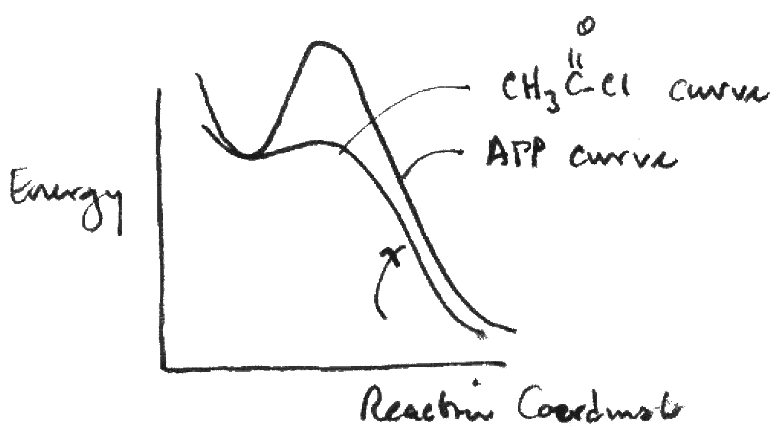 Consider that acid chlorides placed in water will instantly hydrolyze and form the weaker acid. In the figure at right, an energy vs. reaction coordinate curve is shown comparing the changes in energy between acid chlorides and acid phosphates like ATP:
 What accounts for the high energy to proceed through the transition for hydrolysis of ATP? In the figure at left, it is because of the geometry of the phosphate molecule compared to the acid chloride. The ability of H2O molecules to penetrate toward the molecular center where the slightly positively charged phosphate atom is located is more difficult.
This penetration for hydrolysis (or any nucleophilic substitution reactions including biosynthetic reactions) is made easier by certain divalent ions such as Mg2+ or Mn2+, which are of optimial size to distort serial phosphate (di- or triphosphates) and enable nucleophilic substitutions.
Thus the energy transition is accounted for. What about the large release of energy from ATP?
There are generally two theories explained:
| Reaction | ΔG°′
kcal/mol |
|---|---|
| ATP → ATP + Pi | −40.0 |
| ATP → AMP + PPi | −41.0 |
| ATP → AMP + 2 Pi | −77.0 |
| ADP → AMP + Pi | −36.8 |
| Reaction | ΔH kcal/mol | ΔS cal/(mol K) |
|---|---|---|
| ATP4− → ADP3− + P3− + 2 H+ | −18 | −235.6 |
| ADP3− → AMP2− + P3− + 2 H+ | −11.7 | −233.4 |
| ATP4− → AMP2− + PP4− + 2 H+ | −18.8 | −229.7 |
| PP4− → 2 P3− + 2 H+ | −10.9 | −225.5 |
With the production of two H+ ions, one might expect a large decrease in entropy, keeping in mind that water will aggregate around small cations. From the tables above, it is clear that ΔH values are larger for ATP than ADP or PPi because electrostatic repulsions are greater and cumulative when phosphate esters are linked.
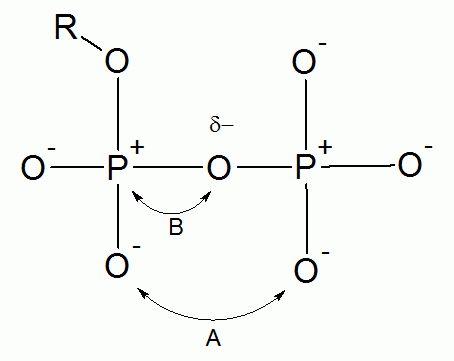 Suppose an R group is bound to a phosphate oxygen in a way to neutralize its negative charge by being a cation or is covalently bonded as an ester. The figure are right shows that the effect of the R group is to decrease the electrostatic repulsion between oxygen atoms on the phosphorous atoms (interaction A), or to create a greater repulsion between P and O atom directly bonded to each other as shown in interaction B. It should be clear that interaction B would contribute more to the release of energy (see the tables for ΔH and ΔS above).
Consider the following table:
| Reaction | pH | ΔG kcal/mol | ΔS cal/(mol K) | ΔH kcal/mol |
|---|---|---|---|---|
| ATP → ADP + P | 5 | −34.3 | +37.7 | −23.1 |
| ATP → ADP + P + H+ | 7.5 | −38.5 | −71.1 | −59.9 |
At the higher pH, a proton can be released into the solvent, resulting in a clear decrease in entropy as expected. However, there is very little free energy change, since the proton release is also more exothermic, with a higher enthalpy.
Consider the table below of basic organic compounds partitioning between an organic phase of benzene versus the aqueous phase (water solvent).
| Reaction | ΔS cal/(mol K) | ΔH kcal/mol | ΔG kcal/mol |
|---|---|---|---|
| CH4 [benzene] → CH4 [H2O] | −75.3 | −11.7 | +10.9 |
| C2H6 [benzene] → C2H6 [H2O] | −83.7 | −9.2 | +15.9 |
| C2H4 [benzene] → C2H4 [H2O] | −62.8 | −6.7 | +12.2 |
The reactions all have ΔH, which that H2O is frozen out (energy or heat is lost). ΔS << 0 because of this tremendous freezing process. Thus saturated hydrocarbons will not distribute between the phases.
CH4 [hexane] → CH4 [H2O]
The change in specific volume ΔV = −22.7 ml/mole. This is rather unusual, since the freezing of the water phase (liquid to solid phase) involves a ΔV > 0. The presence of an organic phase such as hexane can cause this change however.
Consider the two reactions below, in which n-butane transitions to the gas phase either from its own liquid phase or in which it is dissolved in aqueous phase:
| Reaction | ΔH |
|---|---|
| C4H10 [H2] → n-C4H10 [g] | +43.0 |
| C4H10 [liq] → n-C4H10 [g] | +20.1 |
A greater amount of heat is required to get n-butane out of water into the gas phase. While clearly butane is hydrophobic and might want to separate itself from water molecules as opposed to itself, it is a fact that the liquid water aggregates in a manner that traps the dissolved butane molecules.
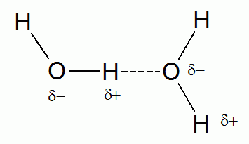 The Hydrogen Bond in Water. The hydrogen bond is effectively a force between to oppositely charged centers: nonbonding electron pairs in O and N atoms usually, and a hydrogen proton nucleus. The hydrogen bond between water molecules is depicted in the figure at the right. The charge separation has a voltage that can be approximated in electron volts as:
V = 9.92 / Dr
where r is the separation distance (in nanometers?) and D is the dielectric constant of the medium. In the data above, water is present as a phase with another phase. It is instructive to examine how water molecules behave in the presence of another phase, and how intermolecular interactions occur at the interface of the two phases (see the figure below).
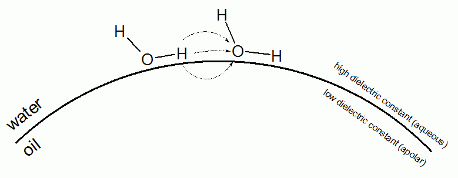
With an organic phase, the dielectric constant will be lower than that of the aqueous phase. This means that the lines of electrical force have a greater strength (magnitude) in regions in which the dielectric constant is lower.
Consider the thermodynamic changes that occur when hydrophobic moieties which are separated (perhaps by an aqueous phase) undergo nonpolar bonding in affinity with each other. The bonding is illustrated below.
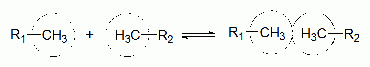 When this occurs in aqueuous phase, ΔH > 0, with a disruption of water molecules. ΔS > 0, indicating that the randomness of the system has increased overall. Because this reaction is expected to be favorable, it is expected that ΔG < 0.
d ΔG/dT < 0 when ΔH > 0
This thermodynamic relationship indicated that when temperature is increased, it is expected that proteins held together by hydrophobic bonding would be more stable in aqueous solution.
Transition states. Electronic transitions within molecular (not atomic) orbitals are of critical importance. In particular are transitions from bonding or nonbonding molecular orbitals to orbitals that de-stabilize bonding (antibonding) orbitals. These transitions within molecules are affected by the environment of the molecule.
π → π*. With pi molecular bonding, the molecule placed in a dielectric of a higher value (say from organic to aqueous), it will be the case the longer wavelengths of light will be fluorescent or they will be absorbed. Any light whose electric field component is parallel to the orietation of the pi conjuated bond will be absorbed, meaning parallel polarization is required.
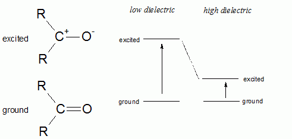
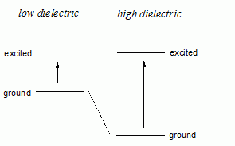 n → π*. The nonbonding electrons refer to the electron pairs in O and N atoms. These transitions can be achieved by longer wavelengths of light, of course. It is the ground state rather than the excited state energy levels that differ between low and high dielectric medium, as shown at the right. Thus shorter wavelengths (higher energy) photons are needed for transition in higher dielectric medium.
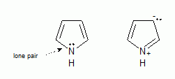 lone pair → π*. A lone pair is a specialized electron pair that represents a localized π orbital bonding. It has all the properties of a π → π* transition. An example of a lone pair is shown at right. Lone pairs hold a nonbonding status. Lone pairs can resonate and appear on another atom. A different kind of lone pair is a non-resonating lone pair, such as the nonbonding pair on pyridine: its lone pair cannot resonate to another atom.
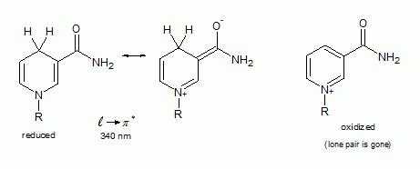
The absorption of light at 340 nm in nicotinamide results in a transition of an electron from a lone pair orbital into a π* antibonding molecular orbital. When the molecule containing nicotinamide is oxidized, this transition does not occur.
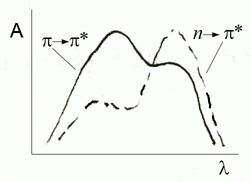 The absorption spectra can change significantly depending on whether a molecule has bonds that improve conjugation of pi bonding. In the figure at right, the absorption maximum shift to a shorter wavelength with increased conjugation. Conjugated pi bonding stabilizes a molecule, thus requiring more energy (shorter wavelength light) to induce bond breaking (transitions from to an antibonding orbital). Nonbonding electrons can more easily (lower energy, longer wavelength) make a transition to antibonding orbitals and would thus be less stable.
Dissipation of Energy for Molecules In Excited State. Molecules that get excited by various means (absorption of radiative/thermal energy, collisions) need to dissipate energy. The table below shows the various processes by which that happens.
| Process | Description |
|---|---|
| Internal Conversion | Energy in electronic levels is transferred to the vibrational and rotational levels of the molecule itself, which are seen as heat |
| External Conversion | Energy in the electronic levels is distributed instead to the vibrational and rotational levels of the solvent molecules |
| Predissociation | 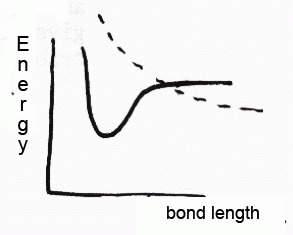 Energy is such that the bond length goes beyond the breaking point, with bond breakdown. The figure at right shows the bond breaking point at the dashed line. This state is of little value in biochemistry |
| Photodissociation | 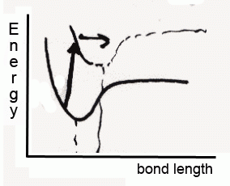 This process is common in the photo-induced dissociation of the iodine molecule (I2), or particularly in carbon-iodine (C-I) bonds. In this case, bonding electron is excited to another electronic level in which the state allows infinit bond length to occur. This has the effect of bond breaking. |
| Fluorescence | 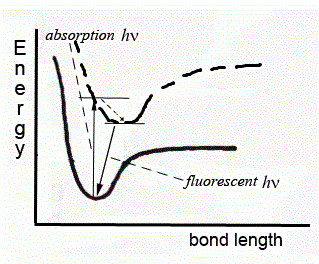 In fluorescence, excitation occurs to another electronic level and then decays to the energy well (energy minimum) of that level. From that excited electronic level, it emits a photon to the ground state energy level well (fluorescence). The decay time is approximately on the order of 1 to 10 nanoseconds. |
Added Material
SPR is an optical effect in which an ultrathin (50 nm) surface of a metal like gold, silver, or copper serves as an interface between media with different refractive indices, which in practice is a prism on one side and a compartment with an aqueous buffer.